Дао Дэ Цзин
“Ничто не ново под луной” — крайне верное замечание. Большинство фантастических миров похожи друг на друга, поскольку являются отражениями первых оригинальных идей. Почти всегда фантастические вселенные — это либо сказочные королевства, либо космическое будущее. Без сомнения, неповторимые особенности наделяют каждый мир индивидуальностью, но, тем не менее, очень редко “основная идея” отличается новизной.
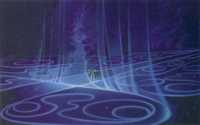
Пройти Путь Амбера дано не каждому.
В число таких редких исключений и входит мир, о котором я собираюсь вам рассказать, — удивительный и парадоксальный мир Амбера, Янтарного Королевства, мир, созданный неисчерпаемой фантазией одного из известнейших мастеров жанра — Роджера Желязны.
Привычный фантастический мир предполагает наличие некой карты или схемы, или иного наглядного отображения географического положения. В данном случае ничего этого нет, поскольку мир Амбера — не только и не столько континент, планета или звездная система, сколько целое мироздание, философская идея, которую ни в каком атласе не обрисуешь.
Итак, изначальная идея такова: все параллельные миры имеют право на существование. Любые, даже самые причудливые вселенные располагаются совсем рядом с нами. Да и сама Земля является одним из множества миров. Причина подобного разнообразия заложена в основном принципе мироздания — все параллельные миры есть отражения (Тени) единственного истинного мира — Амбера.
Чем дальше от него находится отражение, тем больше в нем изменений по сравнению с оригиналом.
Ресурсы в интернете
Роджер Желязны — знаменитый американский писатель-фантаст. Его первый роман был опубликован в 1966 г., и с тех пор все его книги неизменно становились бестселлерами. Всего Желязны написал 150 рассказов и 59 романов, в том числе несколько — в соавторстве с другими мастерами жанра. Желязны был лидером движения “новой волны” в научной фантастике. “Новая волна” предполагает перенос внимания с роботов и космических кораблей на человека и его внутренний мир.
За свои книги писатель получил 6 премий “Хьюго”, 3 премии “Небьюла” и несколько других наград.
И все же основным его произведением считается именно цикл книг про Амбер. Именно этот цикл писатель создавал на протяжении всей своей жизни, именно в нем он воплотил все свои задумки по созданию фантастической вселенной. Именно мир Амбера является наиболее продуманным и прописанным из всех вселенных Роджера Желязны.
Неудивительно, что цикл имеет столько поклонников по всему миру, а сам Амбер давно уже перестал быть только книгой — существуют и компьютерные игры, посвященные этой теме, и серия комиксов, и ролевая система.
Изначально известное
Первые пять книг цикла, “Хроники Корвина”, рассказывают о борьбе за трон Янтарного королевства всех более или менее законных наследников внезапно пропавшего короля Оберона.
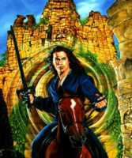
Путешествуя по Теням.
Иллюстрация Алана Рабиновитца к циклу Желязны.
Сам король был в Амбере первым правителем, а фактически — создателем мира. Вернее сказать, король — строитель Замка на горе Колвир.
Описываемый Амбер состоит непосредственно из самого замка, города у подножия Колвира и его предместий, Арденнского леса на подступах к городу, маяка на острове Кабра и моря, соединяющего Амбер с близлежащими Тенями.
По уровню развития цивилизации Янтарное королевство примерно соответствует земной эпохе Возрождения. Однако, благодаря центральному положению во всем мироздании, в королевстве можно найти предметы из множества Теней, в том числе и вещи, явно не соответствующие заявленной ренессансной эпохе. В городе даже есть своя гильдия психиатров — при такой мешанине сверхъестественного последние просто необходимы.
У Амбера имеются два ближайших отражения, которые копируют город и замок наиболее детально, — это Тир-на ног'т и Ремба.
Тир-на ног'т — иллюзорный город, видимый только ночью при лунном свете. Он появляется в небе, и добраться до него можно только с Колвира, пройдя длинную лунную лестницу. Для этого требуется редкая сосредоточенность, поскольку неосторожный и слишком внимательный взгляд, брошенный себе под ноги, может развеять иллюзию, а увидев далеко внизу землю, человек неминуемо упадет.

Карта Янтарного королевства.
Ремба — подводное отражение города. По улицам там плавают рыбы, а на клумбах растут водоросли. Попасть туда можно по лестнице, уходящей с берега в море. Она похожа на лестницу в Тир-на ног'т — они одинаковы по длине, и прохождение лестницы в Рембу тоже сопряжено с опасностями. Главное в данном путешествии — не сходить со ступеней, поскольку на них, как и в самой Рембе, можно спокойно дышать, а вот рядом — уже нет.
Другие близкие Тени отделены от Амбера морем, но взаимодействуют с Янтарным королевством на уровне соседних государств. Часть из них (Бегма, Кашфа и др.) входит в Золотое Кольцо — экономический союз, членство в котором является для страны символом преуспевания.

Карта Замка Амбера.
Достаточно близко к Амберу находится еще одно любопытное Отражение — Страж Четырех Миров. Эта крепость — сосредоточение силы, так как там пересекаются четыре стихии. На стыке происходит высвобождение огромного количества энергии, к которой может получить доступ владелец замка. Неудивительно, что это место все время подвергается нападениям, там постоянно случаются магические поединки, и его хозяева меняются с завидной периодичностью.
Познанное со временем
Магия Янтарного королевства нетипична — вы не найдете здесь гильдии волшебников или чего-то похожего. Возможно, в Отражениях и есть что-то подобное, но в Амбере никто не увлекается излишней мишурой вокруг колдовства, предпочитая работать с энергией первопринципов. Или не заниматься магией вовсе.
При этом в городе, Арденнском лесу и в самом Замке магией буквально насыщен воздух. Там существует множество странных мистических вещей, которые явно имеют магическую природу.
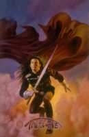
Тяжела дорога к трону.
К примеру, Зеркальный коридор Замка. Он не имеет постоянного места, появляется только перед тем, кто должен его пройти, и человеку невозможно его найти, если коридору этого не нужно. Зеркальным коридор назван из-за того, что на его стенах висят зеркала, в которых идущий по коридору может увидеть кого угодно. Обычно эти “кто угодно” оказываются его родственниками, друзьями или же наоборот — заклятыми врагами, но все они разговаривают с проходящим, выдавая информацию. Иногда это может оказаться полезным, иногда — еще больше запутывает.
Однако магия, доступная человеку, в Янтарном королевстве ограничена бытовыми заклинаниями (например, оберегающими посуду от битья), энергетическим колдовством и таинственными способностями членов королевской семьи, полученными от Единорога, главного божества.
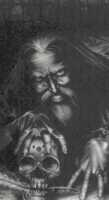
Дворкин, которому мир Амбера обязан своим существованием.
Основой для религии Амбера и близлежащих земель является культ Единорога. В данном случае Единорог — это создание высшего порядка, аватара божества и прародитель короля Оберона.
Отцом короля считается ученый, алхимик, художник, архитектор и колдун Дворкин, который вместе с Единорогом задумал Амбер.
Главенствующая теория утверждает, что Янтарное королевство — единственный истинный мир, способный отбрасывать Тени. Причина подобного утверждения — наличие в Замке Амбера Огненного Пути или Лабиринта. Путь — это магический узор на полу одного из подземелий. Прошедший по его линиям (а это может быть только член королевской семьи) обретает колдовское могущество и власть над Отражениями.
То есть все законные и даже некоторые непризнанные дети Оберона так или иначе проходили Путь и умеют перемещаться по Теням, меняя их по своему усмотрению.
Считается, что в рисунке Пути заложены некие первопринципы мироздания, которые и определяют реальность самого Амбера и его Теней.
Путь может создать призрака любого человека, который его когда-либо проходил, и управлять им, используя в своих целях. В числе прочего Путь позволяет прошедшему его колдовать, используя в качестве магического инструмента свой уменьшенный образ.
В последующих книгах цикла выясняется, что Путь, начертанный на полу амберского Замка, — всего лишь проекция Истинного Пути, созданного Дворкиным и существующим внутри горы Колвир. Более того — сам Истинный Путь при всем том является живым (или по крайней мере разумным) существом нечеловеческой природы, олицетворяющим идею Порядка.
Ресурсы в интернете
- Лучший русский ресурс, посвященный миру Амбера, — http://www.amber.h11.ru/
- Самый подробный англоязычный сайт о Роджере Желязны — http://zelazny.corrupt.net
Новые открытия
Логично, что при таких обстоятельствах у Амбера должен быть противник. Думаю, вы уже заметили, что в мире Желязны отсутствует противостояние Добра и Зла. Вместо этого антагонистами выступают силы Порядка и Хаоса.
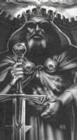
Оберон, основатель замка на горе Колвир.
В последних пяти книгах цикла, “Хрониках Мерлина”, рассказано о Дворах Хаоса, первичном реальном мире.
Небеса там меняют свой цвет каждые несколько часов, жители способны выглядеть так, как им самим вздумается. Там нет ничего определенного и постоянного. Даже самой реальности там как бы не существует — Дворы Хаоса состоят из множества осколков Отражений, и никогда не угадаешь, куда приведет следующая открытая дверь. Именно оттуда бежал в свое время Дворкин, унося знания о создании своего настоящего мира. Именно Хаос является вечным противником Амбера.
Несмотря на явное противоречие, Желязны всегда говорил, что Амбер и Хаос — это не антиподы, а, скорее, два разных полюса.
Если божество Янтарного королевства — Единорог, то во Дворах эти функции исполняет Змей. Он менее активен и не является демиургом, скорее представляя собой некое образное олицетворение высшей силы первозданного Хаоса.
Дворы древнее Амбера, поэтому многое в Янтарном королевстве создано по их образу и подобию. В том числе Огненный Путь Амбера — своеобразный противовес Логрусу Хаоса.
Логрус — постоянно меняющийся узор, пройти который может любой. Он, как и Путь, дает прошедшему власть над Тенями, и, как и Путь, является одушевленным. В одной из книг цикла Логрус и Путь даже вступают в открытое столкновение.
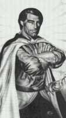
Корвин, главный герой первых романов об Амбере.
Дворы Хаоса не имеют никакой реальной территории, единственное, что является настоящим в этом безумном месте — это Бездна на краю мироздания. Рядом с Бездной находится огромная стеклянная игла-башня. Это столица Хаоса Тхельбан, единственная постройка во Дворах, которая существует не в Отражениях.
Бездна — это та самая первозданная Пустота, из которой все и вышло.
Хаос, равно как и Амбер, тоже отбрасывает Тени — ближайшие к нему Отражения наиболее странны и непонятны для человека, привыкшего к Порядку. Отражение Земля находится приблизительно посередине между Амбером и Хаосом, поэтому в нем смешиваются черты обоих Истинных миров. Отмечая середину мироздания, на границе Теней Амбера и Теней Хаоса растет дерево Игг, природа которого не совсем ясна.
Сын Корвина и владетель Дворов Хаоса.
Каким образом появился Хаос или Бездна, или как Дворкин сотворил Амбер — неизвестно. Желязны оставляет множество вопросов, не открывая читателю всех секретов мироздания. Но, в конечном итоге, это придает его миру только большую глубину, поскольку раскрывая с каждой новой книгой амберского цикла не только новый поворот закрученного сюжета, но и новую тайну, читатель уверяется в наличии чего-то большего.
Последние сенсации
Мир Амбера напоминает луковицу, которую читатель постепенно очищает от шелухи, пробираясь к самой середине. И каждая книга готовит новый сюрприз. Наиболее ярко это заметно на примере с артефактами.
Артефактов в мире Желязны существует не так уж и много: есть всего три разновидности.
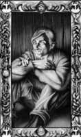 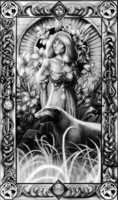 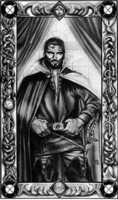
Рукотворные Карты (или Козыри), позволяющие членам королевской семьи Янтарного королевства общаться друг с другом и мгновенно телепортироваться друг к другу. Они представляют собой миниатюрные портреты короля, всех принцев и принцесс Амбера, размером чуть больше обычных игральных карт.
Изначально Карты были нарисованы Дворкином, но потом появились другие Козыри, созданные одним из сыновей Оберона. Позже выяснилось, что с их помощью можно не только беседовать или перемещаться, но еще следить за родственниками и подслушивать их разговоры, а еще позже автор недвусмысленно намекает, что с помощью Карт можно прочитать мысли персонажей, на них изображенных.
Еще один тип артефактов — магические кольца Спикарды. Изначально это просто энергетические резервуары, дающие магу новые силы. Чуть позже читатель понимает, что кольца заколдованы таким образом, чтобы ненавязчиво склонять владельца к поступкам, нужным создателям колец — Змею или Единорогу, соответственно. А еще позже открывается еще один секрет: оказывается, магические мечи принцев Амбера — Грейсвандир и Вервиндль — тоже представляют собой Спикарды, просто существующие не в форме колец.
Наиболее могущественным артефактом является Судный Камень. В первых книгах это амулет короля Амбера, дающий власть над погодой. Впоследствии становится ясно, что он дарует владельцу огромные возможности — с его помощью принц Корвин, главный герой первых пяти книг цикла, создает свой Путь на скале, где растет Игг.
И в итоге выясняется, что Камень — не что иное, как око Змея Хаоса, воплощенный в материальную форму божественный атрибут.
Хроники Амбера
Основные десять романов из цикла “Хроники Амбера” (а помимо них есть также и рассказы) писались Роджером Желязны с 1970 по 1991 годы. Книги следует читать в таком порядке: “Девять принцев Амбера”, “Ружья Авалона”, “Знак Единорога”, “Рука Оберона”, “Двор Хаоса”, “Знамения Судьбы”, “Кровь Амбера”, “Знак Хаоса”, “Рыцарь отражений” и “Принц Хаоса”.
На русском языке “Хроники Амбера” издавались неоднократно (например, издание 2002 года состояло из пяти книг по два романа в каждой). В настоящий момент цикл Желязны выпускает издательство “Эксмо”.
По мотивам Хроник Амбера пишутся многочисленные продолжения, одно из них, “Заря Амбера” Джона Бентакура, недавно переведено на русский язык и опубликовано издательством “АСТ”.
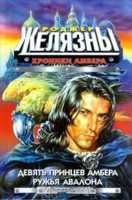 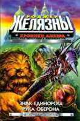 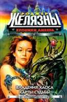 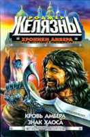 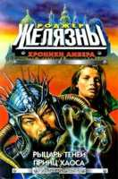 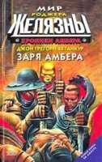
Стоит отметить, что концепция мира Амбера совершенно не ограничивает фантазию автора. В этом мире возможно все что угодно, его разнообразие бесконечно. Любые фантазии автора находят воплощение в ярком и удивительном мире Отражений.
Мироздание по Желязны уникально своей гибкостью и парадоксальностью. К тому же автор все время подкидывает читателю новые головоломки, приоткрывает завесу над разгадкой, намекает, не договаривает, в общем, ведет себя как типичный призрак из Зеркального коридора.
И это затягивает. Затягивает сам мир, а не только сюжетные перипетии. Хотя и они достойны своего фона — такое хитросплетение интриг и загадок, неожиданных поворотов сюжета и загадочных происшествий редко где встречается.
Добавьте к этому удивительно характерных, мастерски выписанных персонажей, их приключения, сменяющиеся, будто в калейдоскопе, декорации, множество событий, переживаний — и вы получите безумный коктейль под названием “Мир Амбера”.
Самое верное слово, которым можно охарактеризовать весь цикл, — это “яркий”. Многообразный, меняющийся, богатый, насыщенный мир, все загадки которого так никогда и не разгадать — вот что такое любимое детище настоящего Мастера, Роджера Желязны.